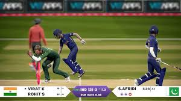
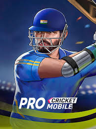
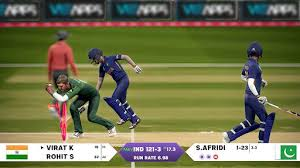
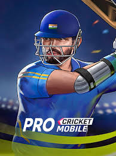
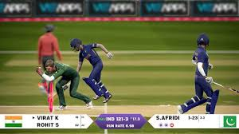
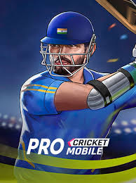
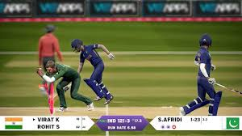
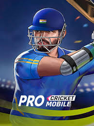

.jpeg) 






.jpeg) Cricket games have been a great source of entertainment of cricket lovers. Cricket gamers are now being more popular day by day. Cricet games have a lot of exitement, compition in it. Cricket is a thrilling sport that blends strategy, skill, and endurance. Whether it's the fast-paced excitement of T20
matches, the tactical battles in One Day Internationals (ODIs), or the ultimate test of patience and skill in Test
cricket, every format has its unique charm. Iconic rivalries like India vs. Pakistan or The Ashes (England vs.
Australia) bring intense drama, while star players like Virat Kohli, Babar Azam, and Steve Smith continue to amaze fans.
With nail-biting finishes, powerful sixes, and incredible bowling spells, cricket never fails to entertain!
Cricket games have been a great source of entertainment of cricket lovers. Cricket gamers are now being more popular day by day. Cricet games have a lot of exitement, compition in it. Cricket is a thrilling sport that blends strategy, skill, and endurance. Whether it's the fast-paced excitement of T20
matches, the tactical battles in One Day Internationals (ODIs), or the ultimate test of patience and skill in Test
cricket, every format has its unique charm. Iconic rivalries like India vs. Pakistan or The Ashes (England vs.
Australia) bring intense drama, while star players like Virat Kohli, Babar Azam, and Steve Smith continue to amaze fans.
With nail-biting finishes, powerful sixes, and incredible bowling spells, cricket never fails to entertain!
.jpeg) Cricket video games bring the excitement of the sport to consoles, PCs, and mobile devices, allowing fans to play as
their favorite teams and players. These games have evolved over the years, offering realistic graphics, immersive
gameplay, and advanced physics.
Cricket video games bring the excitement of the sport to consoles, PCs, and mobile devices, allowing fans to play as
their favorite teams and players. These games have evolved over the years, offering realistic graphics, immersive
gameplay, and advanced physics.